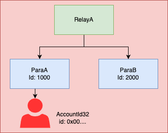

XCM: Cross-Consensus Messaging
This is the place where we will brainstorm XCM documentation and tutorial ideas. It will eventually be in a public centralized place for everyone to find and use.
Draft intro
Welcome to the Cross-Consensus Message Format (XCM) documentation! Whether you're a developer, a blockchain enthusiast, or just interested in Polkadot, this guide aims to provide you with an easy-to-understand and comprehensive introduction to XCM.
Overview
XCM allows for different consensus systems to communicate with each other. This allows things like:
- Sending tokens from one chain to another
- Locking assets on one chain in order to gain some benefit on a smart contract on another chain
- Calling extrinsics on another chain
But that's just the beginning. The true power of XCM comes from its composability. Once you can communicate with other consensus systems, you can get creative and implement whatever use case you need. This is especially true in the context of an ecosystem of highly specialized chains, like Polkadot.
In this chapter, we will cover what XCM is, what it isn't, why it matters, and delve into the different components that make up the XCM ecosystem.
Let's begin.
Introduction
XCM is a messaging format, a language, designed to enable seamless communication between different consensus systems, for example blockchains and smart contracts. XCM was originally developed for the Polkadot ecosystem, but was designed to provide a common language for cross-consensus communication that can be used anywhere.
XCM is a language in which interactions (programs) can be written. It aims to provide better interoperability between consensus systems, both more features and a better user and developer experience.
Its goal is to let blockchain ecosystems thrive via specialization instead of generalization. If there's no interoperability, a chain is forced to do everything on its own. With XCM, a chain can specialize and do what it does best, while still getting the benefits from interacting with others.
XCM has four high-level core design principles which it stands to follow:
- Asynchronous: XCM messages in no way assume that the sender will be blocking on its completion
- Absolute: XCM messages are guaranteed to be delivered and interpreted accurately, in order and in a timely fashion. Once a message is sent, one can be sure it will be processed as it was intended to be.
- Asymmetric: XCM messages, by default, do not have results that let the sender know that the message was received - they follow the 'fire and forget' paradigm. Any results must be separately communicated to the sender with an additional message back to the origin.
- Agnostic: XCM makes no assumptions about the nature of the consensus systems between which the messages are being passed. XCM as a message format should be usable in any system that derives finality through consensus.
XCM is a work-in-progress, the format is expected to change over time. It has an RFC process to propose changes, which end up in newer versions, the current one being v3. To keep up with the development of the format, or to propose changes, go to the XCM format repository.
A Format, Not a Protocol
It's essential to understand that XCM is a format, not a protocol. It describes how messages should be structured and contains instructions relevant to the on-chain actions the message intends to perform. However, XCM does not dictate how messages are delivered. That responsibility falls on transport layer protocols such as XCMP (Cross Chain Message Passing) and VMP (Vertical Message Passing) in the Polkadot ecosystem, or any others to come.
XCM is similar to how RESTful services use REST as an architectural style of development, where HTTP requests contain specific parameters to perform some action. Similar to UDP, out of the box XCM is a "fire and forget" model, unless there is a separate XCM message designed to be a response message which can be sent from the recipient to the sender. All error handling should also be done on the recipient side.
XCM is not designed in a way where every system supporting the format is expected to be able to interpret any possible XCM message. Practically speaking, one can imagine that some messages will not have reasonable interpretations under some systems or will be intentionally unsupported.
Furthermore, it's essential to realize that XCM messages by themselves are not considered transactions. XCM describes how to change the state of the target network, but the message by itself doesn't perform the state change. This partly ties to what is called asynchronous composability, which allows XCM messages to bypass the concept of time-constrained mechanisms, like on-chain scheduling and execution over time in the correct order in which it was intended.
XCM is a language in which rich interactions between systems can be written. Both simple and more complex scenarios can be expressed, and developers are encouraged to design and implement diverse cross-consensus communication solutions.
The XCVM
At the core of XCM lies the XCVM (Cross-Consensus Virtual Machine). A message in XCM (referred to as an XCM, cross-consensus message, or XCMs for more than one) is an XCVM program. The XCVM is a register-based state machine that executes every program by processing its instructions one at a time. During execution, state is tracked in domain-specific registers, and is constantly being used and updated. Most of the XCM format comprises these registers and the instructions used to compose XCVM programs.
Like XCM, the XCVM is also a specification. The first implementation is xcm-executor, provided by Parity. It's built to be highly configurable, with its building blocks available in xcm-builder. Configuring the executor is an important and extensive topic, one we will dive into further in Config Deep Dive. It's entirely possible to create another implementation of the XCVM if desired.
Typically, an XCM takes the following path through the XCVM:
- Instructions within an XCM are read one-by-one by the XCVM. An XCM may contain one or more instructions.
- The instruction is executed. This means that the current values of the XCVM registers, the instruction type, and the instruction operands are all used to execute some operation, which might result in some registers changing their value, or in an error being thrown, which would halt execution.
- Each subsequent instruction within the XCM is read until the end of the message has been reached.
The XCVM register you will hear most about is the Holding register.
An XCVM program that handles assets (which means most of them) will be putting them in and taking them out of this register.
Instructions we'll see later like DepositAsset, WithdrawAsset and many more, make use of this register.
You can see all registers in the All XCVM Registers section.
Architecture
XCM is a format, which means anyone is free to create an implementation for it. The first one is made in Rust, primarily for Substrate-based chains in the Polkadot ecosystem. We'll be looking at this first implementation to tinker with different types of messages in the next sections. For now, we'll take a look at how it's structured.
All the code lives in the Polkadot repo. The main structure is as follows:
- XCM: Defines the fundamental constructs used in XCM and an enum with all the instructions available.
- Executor: Implements the XCVM, capable of executing XCMs. Highly configurable.
- Builder: Offers common configuration building blocks for the executor.
- Pallet: FRAME pallet that provides extrinsics with specific XCM programs.
- Simulator: Allows for testing of XCM programs.
Executor
The XCM executor is responsible for interpreting and executing XCM messages. It is the core engine that processes and handles XCM instructions, ensuring that they are carried out accurately and in the correct order. The XCM executor follows the Cross-Consensus Virtual Machine (XCVM) specification and can be extended, customized, or even replaced with an alternative construct that adheres to the XCVM spec.
Builder
The XCM executor is highly configurable. XCM builder provides building blocks people can use to configure their executor according to their needs.
Pallet
The XCM pallet is a FRAME pallet that can be used to execute XCMs locally or send them to a different system. It also has extrinsics for specific use cases such as teleporting assets or doing reserve asset transfers, which we'll talk about later. It's the glue between XCM and FRAME, which is highly used in the Polkadot ecosystem.
Simulator
The simulator allows for testing XCMs fast, without needing to boot up several different nodes in a network, or test in production. It's a very useful tool which we'll use later to build and test different XCMs.
Quickstart
The XCM code can be found in polkadot repository.
Rust & Cargo
A pre-requisite for using XCM is to have a stable Rust version and Cargo installed. Here's an installation guide on how to install rust and cargo.
Running the Examples
All examples in the documentation are located in the examples repository. Follow these steps to run the first-look example. First clone the repository:
git clone git@github.com:vstam1/xcm-examples.git
cd xcm-examples
To run the first-look example, run the following line:
cargo test -p xcm-examples para_a_simple_transfer -- --nocapture
It should show you the following output:
running 1 test
test first_look::tests::para_a_simple_transfer ... ok
test result: ok. 1 passed; 0 failed; 0 ignored; 0 measured; 1 filtered out; finished in 0.01s
XCM Simulator
Setting up a live network with multiple connected parachains for testing XCM is not straight forward. The XCM-simulator was created as a solution to this problem. The XCM-simulator is a network simulator specifically designed for testing and playing around with XCM. It uses mock relay chain and parachain runtime.
For testing xcm configurations for live runtime environments we use the XCM-emulator. The XCM-emulator can use production relay chain and parachain runtimes. Users can plug in Kusama, Statemine, or their custom runtime etc. With up-to-date chain specs, it's able to verify if specific XCM messages work in live networks. The specific use cases will be further explained in the chapter on testing.
In the next section we will take a first look at an XCM. The XCM-simulator is used for the example code.
First Look
In this section, we take you through a simple example of an XCM. In this example, we withdraw the native token from the account of Alice and deposit this token in the account of Bob. This message simulates a transfer between two accounts in the same consensus system (ParaA). Find here the code example.
Message
let message = Xcm(vec![
WithdrawAsset((Here, amount).into()),
BuyExecution{ fees: (Here, amount).into(), weight_limit: WeightLimit::Unlimited },
DepositAsset {
assets: All.into(),
beneficiary: MultiLocation {
parents: 0,
interior: Junction::AccountId32 {
network: None,
id: BOB.clone().into()
}.into(),
}.into()
}
]);The message consists of three instructions: WithdrawAsset, BuyExecution, and DepositAsset. In the following sections we will go over each of these instructions.
WithdrawAsset
#![allow(unused)] fn main() { WithdrawAsset((Here, amount).into()) }
The first instruction takes as an input the MultiAsset that should be withdrawn. The MultiAsset describes the native parachain token with the Here keyword. The amount parameter is the number of tokens that are transferred. The withdrawal account depends on the Origin of the message. In this example the Origin of the message is Alice.
The WithdrawAsset instruction moves amount number of native tokens from Alice's account into the Holding register.
BuyExecution
#![allow(unused)] fn main() { BuyExecution{fees: (Here, amount).into(), weight_limit: WeightLimit::Unlimited} }
To execute XCM instructions, weight (some kind of resources) has to be bought. The amount of weight depends on the number and type of instructions in the XCM. The BuyExecution instruction pays for the weight using the fees. The fees parameter describes the asset in the Holding register that should be used for paying for the weight. The weight_limit defines the maximum amount of fees that can be used for buying weight. There are special occasions where it is not necessary to buy weight. See fees for more information about the fees in XCM.
DepositAsset
#![allow(unused)] fn main() { DepositAsset { assets: All.into(), beneficiary: MultiLocation { parents: 0, interior: Junction::AccountId32 { network: None, id: BOB.clone().into() }.into(), }.into() } }
The DepositAsset instruction is used to deposit funds from the holding register into the account of the beneficiary. We don’t actually know how much is remaining in the Holding Register after the BuyExecution instruction, but that doesn’t matter since we specify a wildcard for the asset(s) which should be deposited. In this case, the wildcard is All, meaning that all assets in the Holding register should be deposited. The beneficiary in this case is the account of Bob in the current consensus system.
When the three instructions are combined, we withdraw amount native tokens from the account of Alice, pay for the execution of the instructions, and deposit the remaining tokens in the account of Bob.
What next?
Now that we have taken a first look at an XCM, we can dive deeper into all the XCM instructions. For an overview of the instructions check out the xcm-format. Or check out examples for each of the instruction in A Journey through XCM. To get a better understanding about MultiLocations, MultiAssets, and other fundamental concepts in XCM, check out the fundamentals chapter.
Fundamentals
In this chapter we explore all the fundamentals that you should understand before diving deeper into XCM:
MultiLocation
The MultiLocation type identifies any single location that exists within the world of consensus. It can represent all manner of things that exist within consensus, from a scalable multi-shard blockchain such as Polkadot down to an ERC-20 asset account on a parachain. MultiLocations are used to identify places to send XCMs, places that can receive assets, and can even help describe the type of an asset itself, as we will see in MultiAsset.
Location is relative
MultiLocation always expresses a location relative to the current location. It can be thought of as a file system path, without the ability to directly express the “root” of the file system tree. This is for a simple reason: In the world of Polkadot, blockchains can be merged into, and split from other blockchains. A blockchain can begin as a standalone sovereign chain, and could eventually be elevated to become a parachain within a larger consensus. If it did that, then the meaning of “root” would change overnight and this could spell chaos for XCMs and anything else using MultiLocation. To keep things simple, we exclude this possibility altogether.
Hierarchical structure
Locations in XCM are hierarchical; some places in consensus are wholly encapsulated within other places in consensus. A parachain of Polkadot exists wholly within the overall Polkadot consensus; we call this an interior location. Or a pallet exists wholly within a parachain or relay chain. Putting it more strictly, say we have two consensus systems, A and B. If any change in A implies a change in B, then we say A is interior to B.
So what is a MultiLocation: Simple example
A quick summary of the previous points:
- A MultiLocation identifies any single location that exists within the world of consensus.
- A MultiLocation is always relative to the current location.
- MultiLocations in XCM are hierarchical.
Now take a look at the MultiLocation struct:
pub struct MultiLocation {
pub parents: u8,
pub interior: Junctions,
}As we have already discussed, locations in XCM are hierarchical. The following image shows an example of such a Hierarchy.

Relay chain A completely encapsulates Parachain A and B (indicated by the arrows) and parachain A encapsulates an account 0x00....
So RelayA is higher in the hierarchy than ParaA and ParaB and can be described as the parent of these parachains.
The parents: u8 in the MultiLocation struct describes the number of steps in the hierarchy we want to move up.
The interior: Junctions express the steps in the hierarchy we want to move down.
The Junctions type will be further discussed in the next chapter about Junctions, but for now, it's just a way to express a way down the hierarchy.
As all MultiLocations are relative to the current location, Parachain B relative to Parachain A is one step up and one step down in the hierarchy.
To get a better understanding of this concept, we show some simple MultiLocations in the code example below.
The first two examples are relative to RelayA and the second set of examples is relative to ParaB.
In the Location comments, we expressed the locations in text.
The .. express a step up in the hierarchical structure (the “parent” or the encapsulating consensus system).
The .. are followed by some number of Junctions, all separated by /.
The X1 and X2 variants are expressing the number of Junctions that we step down in the hierarchical structure (see Junctions for an explanation).
// From: RelayA
// To: ParaB
// Location: Parachain(2000)
MultiLocation {parents: 0, interior: X1(Parachain(2000))};
// To: Account in ParaA
// Location: Parachain(1000)/AccountId32(0x00..)
MultiLocation {
parents: 0,
interior: X2(
Parachain(1000),
AccountId32{network: None, id: [0u8; 32]}
)
};
// From: ParaB
// To: RelayA
// Location: ../Here
MultiLocation {parents: 1, interior: Here};
// To: Account in ParaA
// Location: ../Parachain(1000)/AccountId32(0x00..)
MultiLocation {
parents: 1,
interior: X2(
Parachain(1000),
AccountId32{network: None, id: [0u8; 32]}
)
};What's next:
- More information about junctions
- More MultiLocation examples
- Expressing assets using Multilocations: [MultiAsset][../multiasset.md]
Junction(s)
In the section on MultiLocations, we looked at the MultiLocation struct.
We talked about the Multilocation being a way to describe moving from one place in the system hierarchy to another.
The parents parameter expresses the number of steps up in the hierarchy.
In this section, we dive further into the MultiLocation struct and explain how we can use the Junctions type to describe steps in the system hierarchy.
Take a look at the MultiLocation struct again:
pub struct MultiLocation {
pub parents: u8,
pub interior: Junctions,
}The system hierarchy consists of 1-to-n relations.
Each place in the system hierarchy can only ever have one parent, so there is only one way up the hierarchy.
That is why we can use a u8 to describe the number of parents we want to move up.
But moving down is a bit more difficult, as one consensus system can encapsulate multiple other consensus systems(e.g. a relay chain can have multiple parachains).
So to describe the correct steps down the hierarchy, we use the Junctions type.
Junctions Type
pub enum Junctions {
/// The interpreting consensus system.
Here,
/// A relative path comprising 1 junction.
X1(Junction),
...
/// A relative path comprising 8 junctions.
X8(Junction, Junction, Junction, Junction, Junction, Junction, Junction, Junction),
}The Junctions enum can represent zero to eight steps down the hierarchy.
When the Here variant is used, it means that we do not have to take steps down the hierarchy.
We can for example describe the current location with {parents: 0, interior: Here} or the Parent location with {parents: 1, interior: Here}.
If we want to take steps down the hierarchy, we express each step as a Junction.
Junction Type
A Junction describes a step down in the Hierarchy.
The Junctions are defined as follows:
pub enum Junction {
Parachain(u32),
AccountId32 {
network: Option<NetworkId>,
id: [u8; 32],
},
AccountIndex64 {
network: Option<NetworkId>,
index: u64,
},
AccountKey20 {
network: Option<NetworkId>,
key: [u8; 20],
},
PalletInstance(u8),
GeneralIndex(u128),
GeneralKey {
length: u8,
data: [u8; 32],
},
OnlyChild,
Plurality {
id: BodyId,
part: BodyPart,
},
GlobalConsensus(NetworkId),
}Parachain
The Parachain junction is used to describe a parachain from the point of a relay chain.
Each parachain has an Id, e.g. Statemine in the Kusama network has Id 1000.
PalletInstance
The PalletInstance junction is used to describe a pallet in one of the parachains or relay chain.
Each pallet has an Id that can be used for the PalletInstance.
This junction is mainly used for FRAME based systems.
AccountId32 and AccountKey20
Each of these junctions can be used to describe an account located in the current consensus system.
The AccountId32 is used to describe substrate-based accounts, while the AccountKey20 is mainly used to describe Ethereum or Bitcoin-based accounts or smart contracts.
Both junctions express an account based on the context they are used in.
If the current location is the relay chain, then the junctions describe an account in the relay chain.
The same is true for each parachain location.
GeneralIndex and GeneralKey
Non-descript indices and keys within the current context location.
The usage will vary widely owing to its generality.
An example use case for the GeneralIndex is to describe an Asset within an Assets Parachain.
NOTE: If possible, try to avoid using this and instead use a more specific junction.
AccountIndex64
The AccountIndex64 can be used to describe an account index.
This may be used when the context is a Frame-based chain and includes e.g. an indices pallet.
OnlyChild
The OnlyChild junction can be used to describe the child of a location if there exists a 1-to-1 relation between the parent and child in the system hierarchy.
The OnlyChild junction is currently not used except as a fallback when deriving context.
Plurality
The Plurality junction is used to describe a pluralistic body existing within the current consensus location.
Typical to be used to represent a governance origin of a chain, but could in principle be used to represent
things such as multisigs also.
See the BodyId documentation for a better understanding of the bodies that the Plurality junction can represent.
GlobalConsensus
A global network (e.g. Polkadot or Kusama) is capable of externalizing its own consensus.
This is not generally meaningful outside of the universal level.
An example would be describing the Kusama relay chain from the perspective of the Polkadot relay chain as {parents: 1, interior: GlobalConsensus(Kusama)}.
An example use case could be routing XCMs between global consensus networks using bridges.
Multiple ways to create a MultiLocation
// Current Location
MultiLocation {parents: 0, interior: Here};
MultiLocation::new(0, Here);
MultiLocation::here();
MultiLocation::default();
let _: MultiLocation = Here.into();
// Parent Location
MultiLocation {parents: 1, interior: Here};
MultiLocation::parent();
let _: MultiLocation = Parent.into();
// Conversion
MultiLocation { parents: 2, interior: X2(Parachain(1), GeneralIndex(1))};
let _: MultiLocation = (Parent, Parent, Parachain(1), GeneralIndex(1)).into();Example
In this example we show different MultiLocations for the system hierarchy in the image below.
From the perspective of RelayA
// ParaA
let _: MultiLocation = Parachain(1000).into();
// AccountId32 in Parachain A
let _: MultiLocation = (Parachain(1000), AccountId32 { network: RELAY_A_NETWORK, id: [0u8; 32]}).into();
// Asset in Parachain A
let _: MultiLocation = (Parachain(1000), PalletInstance(1), GeneralIndex(1)).into();
// Ethereum based account on Parachain B
let _: MultiLocation = (Parachain(2000), AccountKey20 { network: RELAY_A_NETWORK, key: [0u8; 20] }).into();
// Smart Contract
let _: MultiLocation = (Parachain(2000), PalletInstance(1), AccountKey20 { network: RELAY_A_NETWORK, key: [0u8; 20] }).into();
// RelayB
let _: MultiLocation = (Parent, GlobalConsensus(RELAY_B_NETWORK)).into();
// NFT on Parachain C
let _: MultiLocation = (Parent, GlobalConsensus(RELAY_B_NETWORK), Parachain(1000), GeneralIndex(1)).into();From the perspective of Parachain C
// Relay A
let _: MultiLocation = Parent.into();
// Plurality Example. Many more BodyId/BodyPart combos imaginable
let _: MultiLocation = (Parent, Plurality { id: BodyId::Index(0), part: BodyPart::Members { count: 10 } }).into();
// Account in Relay
let _: MultiLocation = (Parent, AccountId32 { network: None, id: [0u8; 32] }).into();From the perspective of the Smart Contract
// Asset in Parachain A
let _: MultiLocation = (Parent, Parent, Parachain(1000), PalletInstance(1), GeneralIndex(1)).into();
MultiAsset
When working with XCM, it is often needed to represent an asset of some sort. This is because practically all public blockchains in existence rely on some native digital asset to provide the backbone for its internal economy and security mechanism. For example, the native asset for the Polkadot relay chain is DOT.
Some blockchains manage multiple assets, e.g. Ethereum’s ERC-20 framework allows for many different assets to be managed on-chain. Some manage assets that are not fungible, such as Ethereum’s Crypto-kitties — each kitty is a one-of-a-kind instance. It was an early example of such non-fungible tokens or NFTs.
XCM is designed to be able to describe all such assets without breaking a sweat.
For this purpose, there is the MultiAsset datatype, along with its related types MultiAssets, WildMultiAsset, and MultiAssetFilter.
MultiAsset Breakdown
Let's take a look at the MultiAsset struct:
pub struct MultiAsset {
pub id: AssetId,
pub fun: Fungibility,
}So two fields define our asset: id and fun. These fields are indicative of how XCM approaches assets. Firstly, an overall asset identity must be provided. For fungible assets, this is simply a symbol that identifies the asset. For NFTs this identifies the overall asset “class” — different asset instances may be within this class.
enum AssetId {
Concrete(MultiLocation),
Abstract([u8; 32]),
}The asset identity is expressed in one of two ways; either Concrete or Abstract.
Abstract identities allow assets to be specified by a 32-byte blob.
This is convenient, but it relies on the receiver to interpret the blob in the way that the sender expects, which will require a common definition between the sender and the receiver, and may not be simple to achieve.
Concrete identities use a MultiLocation to identify an asset unambiguously.
For native assets (such as DOT), the asset is identified as the chain which mints the asset (the Polkadot Relay Chain in this case, which would be the location .. from one of its parachains).
Other assets (e.g. non-native assets or NFTs) can be identified by a GeneralIndex junction. Depending on the implementation of the encapsulating consensus system, the exact location may differ (e.g. GeneralIndex(AssetID) or PalletInstance(PalletID)/GeneralIndex(AssetID) can both be valid asset identities).
enum Fungibility {
// Fungible cannot be 0
Fungible(u128),
NonFungible(AssetInstance),
}Secondly, they must be either fungible or non-fungible. If they’re fungible, then there should be some associated non-zero amount of assets specified. If they’re not fungible, then instead of an amount, there should be some indication of which AssetInstance they are. (This is commonly expressed with an index, but XCM also allows arrays.)
How to use Multiple Assets Together?
There are multiple ways to group Assets. In this section, we go over these methods.
MultiAssets
One way to group a set of MultiAsset items is the MultiAssets type.
struct MultiAssets(Vec<MultiAsset>);This structure must uphold some rules:
- It may not contain duplicate
MultiAssets (Fungibleassets are considered the same if their IDs match. However,NonFungibleassets are different if theAssetInstanceis different); - All items must be ordered;
- The number of items should grow no larger than MAX_ITEMS_IN_MULTIASSETS (currently set to 20).
WildMultiAsset
Then we have WildMultiAsset; this is a wildcard that can be used to match against one or more MultiAsset items. All the WildMultiAsset wildcards can be used to select/filter assets in the Holding register.
pub enum WildMultiAsset {
/// All assets in Holding.
All,
/// All assets in Holding of a given fungibility and ID.
AllOf { id: AssetId, fun: WildFungibility },
/// All assets in Holding, up to `u32` individual assets (different instances of non-fungibles
/// are separate assets).
AllCounted(#[codec(compact)] u32),
/// All assets in Holding of a given fungibility and ID up to `count` individual assets
/// (different instances of non-fungibles are separate assets).
AllOfCounted {
id: AssetId,
fun: WildFungibility,
#[codec(compact)]
count: u32,
},
}MultiAssetFilter
Finally, there is MultiAssetFilter.
This is used most often and is just a combination of MultiAssets and WildMultiAsset allowing either a wildcard or a list of definite (i.e. not wildcard) assets to be specified.
pub enum MultiAssetFilter {
/// Specify the filter as being everything contained by the given `MultiAssets` inner.
Definite(MultiAssets),
/// Specify the filter as the given `WildMultiAsset` wildcard.
Wild(WildMultiAsset),
}Examples
MultiAsset
For more information about the MultiLocations used to define concrete assets, see MultiLocation and Junction.
// Location Relay Chain
// 100 Native Asset (three ways)
MultiAsset {id: Concrete(MultiLocation {parents: 0, interior: Here}), fun: Fungible(100u128)};
MultiAsset {id: Here.into(), fun: 100.into()};
let _: MultiAsset = (Here, 100u128).into();
// 100 Parachain's Native Asset
let _: MultiAsset = (X1(Parachain(1000)), 100u128).into();
// 100 Fungible assets in Parachain 1000 with id 1234
let _: MultiAsset = (X2(Parachain(1000), GeneralIndex(1234)), 100u128).into();
// Non Fungible asset with asset class 1234 containing only one nft instance in Parachain 1000
let _: MultiAsset = (X2(Parachain(1000), GeneralIndex(1234)), Undefined).into();
// Non Fungible asset with asset class 1234 and AssetInstance 1 in Parachain 1000
let _: MultiAsset = (X2(Parachain(1000), GeneralIndex(1234)), Index(1)).into();MultiAssetFilter
let a1: MultiAssets = MultiAssets::from(vec![MultiAsset {id: Here.into(), fun: 100u128.into()}]);
let b1: MultiAssets = (Here, 100u128).into();
assert_eq!(a1, b1);
let a2: MultiAssetFilter = a1.into();
let b2 = MultiAssetFilter::Definite((Here, 100u128).into());
assert_eq!(a2, b2);
let a3 = MultiAssetFilter::Wild(WildMultiAsset::All);
let b3: MultiAssetFilter = All.into();
assert_eq!(a3, b3);XCVM
Weight and fees
The resources available to a blockchain are limited, so it's important to manage how operations on-chain use them. Not managing how resources are used can open an attack vector, known as DoS (Denial of Service), where an attacker floods the chain with operations in order to get it to stop producing blocks. In order to manage how resources are used and to protect against DoS attacks, XCM uses a concept of weight. This concept, which has the purpose of quantifying usage of blockchain resources, comes from the Substrate world.
Weight is two-dimensional, it tracks both time (execution time) and space (state accesses). Weight determines how much fees need to be paid in order to perform some operation. The logic for turning it into fees is configurable.
Some systems have the concept of gas metering, which is calculated during execution and only measures execution time. Weight, however, is static, defined beforehand, which makes XCM execution lighter by not including gas metering.
The principle behind weight payment is to pay for what you use, so the two stages of XCM where fees are paid are sending the message and actually executing it.
The fees for sending are paid on the local system, usually by the origin of the message, because we are using the message delivery mechanism maintained by the origin.
Similarly, the execution fees are paid on the destination system, via the BuyExecution instruction. In other words, XCMs are paid for via their own instructions.
We'll talk more about BuyExecution in the fee handling chapter.
XCM is agnostic, which means it doesn't assume fees need to be paid. It's entirely possible to not pay for the effects of an XCM on the destination system. Even in systems where fees have to be paid, special cases of free execution can be made. There are security measures systems can put in place (see barrier) to not execute XCMs that do not pay for their fees.
Executor config
The executor has a Weigher configuration item that specifies the weight of each instruction.
It weighs the whole message by adding the weight of each instruction.
A simple way of weighing instructions is to assign them a base weight value to all of them.
This works, but it is not very accurate, as different instructions use more resources when being executed.
A better approach is to benchmark each instruction to find out the actual weight used by each.
Another configuration item, Trader, converts the required weight units into fees, which are represented as MultiAssets.
There are two basic approaches: one is to just assign a value (measured in assets) to each unit of weight; the other is to reuse some existing transaction payment method for XCM weight.
Custom configurations allow for things like NFT coupons that give you a certain amount of weight for executing the XCM.
Naturally, this configuration items allow for any approach you can think of for weighing messages and charging execution fees.
XCM pallet
FRAME pallets, like the XCM pallet, specify weights for each extrinsic they expose. That means that when interacting with pallets that deal with XCM, there will be an additional fee at the beginning for calling the extrinsic locally.
A Journey through XCM
This section will be a step-by-step, practical introduction to all the features XCM has. We'll create XCMs for a variety of use cases, learning about all the instructions available to us along the way. Let's step right in.
Transfers
The first feature you'll be interested in when dealing with XCM is being able to transfer assets between consensus systems. In the Quickstart section, we saw a simple XCM that when executed, would send assets between two accounts on the same consensus system. Now that we've learnt the fundamentals, let's go over those same instructions.
WithdrawAsset
WithdrawAsset(MultiAssets),This instruction is the most common way to get assets to the holding register of the XCVM.
The MultiAssets in the operand will be stored in the holding register to be later used for other instructions.
As we've seen, we can use the expression (Here, amount).into() to take a certain amount of the native token.
BuyExecution
BuyExecution { fees: MultiAssets, weight_limit: WeightLimit },Because XCM is designed to be agnostic to the underlying consensus system, it doesn't have fee payment baked in. This instruction lets you pay for the execution of the XCM using the assets in the holding register. Most XCMs are not allowed to be executed (blocked by the barrier) if they don't contain this instruction as one of the first ones to pay for all future ones.
DepositAsset
DepositAsset { assets: MultiAssetFilter, beneficiary: MultiLocation },This instruction will put assets from the holding register that match the MultiAssetFilter into the beneficiary.
Note that beneficiary must be a location where the local consensus system can actually deposit assets to, e.g. it doesn't make sense to deposit assets to ../AccountId32(0x0).
Example
let message = Xcm(vec![
WithdrawAsset((Here, amount).into()),
BuyExecution { fees: (Here, amount).into(), weight_limit: Unlimited },
DepositAsset {
assets: All.into(),
beneficiary: AccountId32 { id: ALICE.into(), network: None }.into()
},
]);As we've seen, the above message results in withdrawing assets from the origin of the message, paying for execution and depositing the rest to another account on the same system. The full example can be seen in the examples repo.
Transferring between systems
But what if you want to make a transfer from one system to another? There are two ways of doing this:
- Asset teleportation
- Reserve-backed transfers
We'll be discussing both in the following chapters.
Asset teleportation
Asset teleportation is the simpler method of the two for sending assets from one chain to another. It has only two actors, the source and the destination.
Process
The way in which we transfer assets between the source and the destination are briefly summarized in the numbered labels on the diagram, and are explained in more detail below:
1. InitiateTeleport
The source gathers the assets to be teleported from the sending account and takes them out of the circulating supply, taking note of the total amount of assets that were taken out.
2. ReceiveTeleportedAssets
The source then creates an XCM instruction called ReceiveTeleportedAssets and puts the amount of assets taken out of circulation and the receiving account as parameters to this instruction.
It then sends this instruction over to the destination, where it gets processed and new assets are put back into the circulating supply accordingly.
3. DepositAsset
The destination then deposits the assets to the receiving account of the asset.
Thoughts
The phrases "taken out of circulating supply" and "put back into circulating supply" are highlighted above to give an indication of how much flexibility an XCM executor has in implementing the semantics of taking an asset out of and putting it back into its circulating supply. The straightforward answer is to burn the assets to take them out of circulation, but there are multiple methods of achieving the same goal, such as transferring the assets locally to an inaccessible account. Likewise for putting assets back to circulation, the receiving consensus system can freely choose to implement such semantics by releasing assets from a pre-filled and inaccessible treasury of the assets transferred, or perform a mint of the assets.
The above also gives a hint on the disadvantages of this model, it requires both the source and destination to have a high level of mutual trust. The destination must trust that the source has appropriately removed the assets that were sent over from the circulating supply, and the source must also trust the destination to put the assets back into circulation. An asset teleportation should result in the same circulating supply of the asset. Failing to uphold either of these two conditions will result in a change in the asset's total issuance (in the case of fungible tokens) or a complete loss/duplication of an NFT.
Example
The following is an example XCM program that achieves the process described above.
let message = Xcm(vec![
WithdrawAsset((Here, teleport_amount).into()),
InitiateTeleport {
assets: All.into(),
dest: Parachain(1).into(),
xcm: Xcm(vec![DepositAsset {
assets: All.into(),
beneficiary: Junction::AccountId32 {
network: None,
id: ALICE.into(),
}
}]),
},
]);Let's discuss how the new instructions work.
InitiateTeleport
InitiateTeleport { assets: MultiAssetFilter, dest: MultiLocation, xcm: Xcm<()> }This instruction is intended to be executed from the source system.
It takes the assets to be teleported (that match the MultiAssetFilter) from the holding register, which needs to have been populated, usually with a WithdrawAsset instruction.
It then sends an XCM to the destination system given by dest with the following instructions:
- ReceiveTeleportedAsset
- ClearOrigin
- All the instructions from the
xcmoperand, in this caseDepositAsset
As we see in the example, instructions 1. and 2. are always added by the executor, no need to specify them.
ReceiveTeleportedAsset
ReceiveTeleportedAssets(MultiAssets)This instruction is a trusted indication. It should only be executed if the origin of the XCM is trusted for this purpose. This level of care must be taken because this instruction will put assets into the circulating supply, usually minting them. As specified earlier, this can result in an increase/decrease in circulating supply of an asset, or a duplication/loss of an NFT, if the source is not trusted for this purpose.
You can set which origins are allowed (act as teleporters) by configuring the IsTeleporter type in the XCM executor.
If the origin is not allowed to teleport assets to this system, an UntrustedTeleportLocation error is returned.
This instruction will populate the holding register with the teleported assets, which can be used by further instructions.
In our example, the DepositAsset instruction will deposit these assets to the receiving account.
ClearOrigin
ClearOriginThis instruction clears the origin register of the XCVM.
It's mainly used to not allow further instructions to act on behalf of the previous origin.
The InitiateTeleport instruction sends a XCM to the destination system with freshly minted assets and immediately clears the origin.
Another example
Let's say we want to teleport an NFT (Non-Fungible Token) this time, instead of a fungible token, to another system. We could do so with the following program:
let message = Xcm(vec![
WithdrawAsset((GeneralIndex(1), 42u32).into()),
InitiateTeleport {
assets: All.into(),
dest: Parachain(1).into(),
xcm: Xcm(vec![DepositAsset {
assets: All.into(),
beneficiary: Junction::AccountId32 {
id: ALICE.into(),
network: None,
}.into()
}]),
},
]);Very little changes, in fact, only the MultiAsset we're referencing changes, like we would expect.
All the teleportation logic stays the same.
The example assumes an NFT with index 42 inside a collection with index 1.
Next steps
We'll look at reserve-backed transfers next.
Reserve-backed transfers
For consensus systems that don't have the level of trust required for asset teleportation, they can instead opt for trusting a third party called a reserve to store the real assets (think Statemine on Kusama, or Statemint on Polkadot). The source and the destination need a way to keep track of the real assets they own on the reserve, this is usually done by minting a new derivative token. Both source and destination now need accounts on the reserve to hold their assets, we call these their sovereign accounts on that system.
Process

The flow in this diagram is further explained below:
1. InitiateReserveWithdraw
The source gathers the derivative assets to be transferred from the sending account and burns them, taking note of the amount of derivatives that were burned.
2. WithdrawAsset
The source sends a WithdrawAsset instruction to the reserve, instructing it to withdraw real assets equivalent to the amount of derivatives burned from the source chain.
3. DepositReserveAsset
The reserve deposits the assets withdrawn from the previous step to the destination's sovereign account, taking note of the amount of assets deposited.
4. ReserveAssetDeposited
The reserve creates a ReserveAssetDeposited instruction with the amount of assets deposited to the destination's sovereign account, and sends this instruction onwards to the destination.
The destination receives the instruction and processes it, minting the correct amount of derivative assets.
5. DepositAsset
The destination deposits the derivative assets minted to the receiving account.
Thoughts
The addition of a third consensus system is already a hint of the disadvantages of a reserve asset transfer model. Firstly, the reserve could easily become a point of centralization when too many consensus systems rely on it to be the reserve of choice for their assets. Secondly, the sheer amount of steps required necessarily makes it more prone to errors, and as such, implementors will have to consider more possible pitfalls and provide technical support accordingly when an end user encounters issues arising from these steps. Last, but not least, either the source or destination can opt to designate multiple consensus systems to be their reserves. In such a situation, care must be taken in order to ensure that the sovereign accounts on the reserves are balanced, so that one doesn't get drained while the others still contain a healthy balance.
A note on trust
We mentioned that reserve-backed transfers require the sender and the destination to trust a third party, the reserve, and not each other. This is true, but it doesn't mean the sender and destination have to trust ONLY the reserve, they also have to trust the issuer of the token. Whenever you are dealing with a particular asset, you are always trusting the issuer of said asset, because at any point they could mint a huge amount of that asset, wreaking havoc. You have to make sure you trust the asset, based on the security mechanisms used to protect its issuance. For this reason, reserves work best when they are the issuers of the asset being transacted. In that scenario, you only have to trust the reserve, period.
Example
We'll create a program for the scenario in the diagram. Let's assume that the reserve is a relay chain and both source and destination are parachains 1 and 2 respectively. Let's also say that an account ALICE in parachain 1 wants to transfer the relay chain's native token to their other account (also ALICE) on parachain 2. The program might look like this:
let message = Xcm(vec![
WithdrawAsset((Parent, amount).into()),
InitiateReserveWithdraw {
assets: All.into(),
reserve: Parent.into(),
xcm: Xcm(vec![DepositReserveAsset {
assets: All.into(),
dest: Parachain(2).into(),
xcm: Xcm(vec![DepositAsset {
assets: All.into(),
beneficiary: AccountId32 { id: ALICE.into(), network: None }.into(),
}]),
}]),
},
]);This program should be executed on the source, so on parachain 1.
We start, as usual, with a WithdrawAsset instruction.
The MultiAsset here references the relay chain's native token, which means we'll be gathering the derivative on this chain.
InitiateReserveWithdraw
InitiateReserveWithdraw { assets: MultiAssetFilter, reserve: MultiLocation, xcm: Xcm<()> }The InitiateReserveWithdraw instruction takes the derivative token from the holding register and burns it.
Then it sends a new XCM to the specified reserve, in this example, the relay chain.
This new XCM contains the following instructions, in order:
- WithdrawAsset
- ClearOrigin
- All instructions specified in the
xcmoperand, in this caseDepositReserveAsset
As was the case with teleports, instructions 1. and 2. are added automatically by the executor when using InitiateReserveWithdraw.
Upon receiving this XCM, the reserve will withdraw the asset from parachain 1's sovereign account (where the real asset is stored), and deposit it on parachain 2's sovereign account.
DepositReserveAsset
DepositReserveAsset { assets: MultiAssetFilter, dest: MultiLocation, xcm: Xcm<()> }This instruction is used in this example instead of DepositAsset, because as well as depositing the assets to parachain 2's sovereign account, this instruction will send another XCM to parachain 2.
This new XCM has the following instructions:
- ReserveAssetDeposited
- ClearOrigin
- All instructions specified in the
xcmoperand, in this case, onlyDepositAsset
ReserveAssetDeposited
ReserveAssetDeposited(MultiAssets)Parachain 2 receives the XCM, mints new derivative tokens and deposit them locally to the beneficiary account.
ReserveAssetDeposited is a trusted indication.
As is the case with teleporting, you need to trust the reserve to have actually put the specified amount of assets in the sovereign account of this system.
You can specify which systems you trust as reserves for which assets by configuring the IsReserve type in the executor.
In our example, both parachains trust the relay chain as a reserve for its own native token.
Another example
We now know this type of transfers requires 3 actors: the source, the reserve, and the destination. However, the source and reserve don't have to be different systems, they could be one and the same, as in the following diagram.

In this case the message is the following:
let message = Xcm(vec![
WithdrawAsset((Parent, amount).into()),
DepositReserveAsset {
assets: All.into(),
dest: Parachain(2).into(),
xcm: Xcm(vec![DepositAsset {
assets: All.into(),
beneficiary: AccountId32 { id: ALICE.into(), network: None }.into(),
}]),
},
]);This simplifies the reserve-backed transfer. However, the destination still needs to:
- Recognize the source as the proper reserve for the tokens that are being sent over and
- Support minting derivatives of the tokens being sent over
It's also possible to skip the WithdrawAsset instruction.
The TransferReserveAsset instruction handles the withdrawal already.
It can be called like so:
let message = Xcm(vec![
TransferReserveAsset {
assets: (Parent, amount).into(),
dest: Parachain(2).into(),
xcm: Xcm(vec![DepositAsset {
assets: All.into(),
beneficiary: AccountId32 { id: ALICE.into(), network: None }.into(),
}]),
},
]);Another note on trust
In this model, where the sender is the reserve, the destination is trusting the sender entirely. It's the sender the one who doesn't need to trust the destination, since it'll ever only be minting derivatives anyway, the sender/reserve controls the real assets and issuance.
Next steps
Next, we'll talk about a very important topic we mentioned before but skipped in this chapter, paying fees for the effects our XCMs have.
Transact
XCM contains an instruction that allows for the execution of calls (from a RuntimeCall in a FRAME-based system, to a smart contract function call in an EVM-based system) in a consensus system.
It is the Transact instruction and it looks like this:
Transact {
origin_kind: OriginKind,
require_weight_at_most: Weight,
call: DoubleEncoded<Call>
}The Transact instruction has three fields.
The origin_kind is of type OriginKind and specifies how the origin of the call should be interpreted.
In the xcm-executor, the origin_kind is used to determine how to convert a MultiLocation origin into a RuntimeOrigin.
For more information, check out the xcm-executor config docs.
The require_weight_at_most field tells the XCVM executing the call how much weight it can use.
If the call uses more weight than the specified require_weight_at_most, the execution of the call fails.
The call field is of type DoubleEncoded<Call>.
pub struct DoubleEncoded<T> {
encoded: Vec<u8>,
#[codec(skip)]
decoded: Option<T>,
}XCM is consensus system agnostic; it does not know what is being encoded in the call field.
Hence, the field is a byte vector that can be freely interpreted in whatever form possible.
However, the XCVM does not inherently know how to interpret this call field nor how to decode it; it is reliant on the T type parameter to specify the proper codec for the byte vector.
Instead of just using a Vec<u8> we use DoubleEncoded as a wrapper around a pre-encoded call (Vec<u8>) with extra functionalities such as caching of the decoded value.
We like to emphasize that the call in the Transact instruction can be anything from a RuntimeCall in a FRAME-based system, to a smart contract function call in an EVM-based system.
Each XCVM has a Transact Status Register, to record the execution result of the call that is dispatched by the Transact instruction.
Important note: The execution of the XCM instruction does not error when the dispatched call errors.
XCM Executor
In this section, we quickly look at how the XCM executor executes the Transact instruction.
It executes, among other things, the following steps:
- Decode the call field into the actual call that we want to dispatch.
- Check with the SafeCallFilter on whether the execution of this call is allowed.
- Use the OriginConverter to convert the
MultiLocationorigin into aRuntimeOrigin. - Check whether the call weight does not exceed
require_weight_at_most. - Dispatch the call with the converted origin and set the
transact_statusregister to be the result of the dispatch. - Calculate the weight that was actually used during the dispatch.
Example 1
For the full example, check here.
In this example, the relay chain executes the set_balance function of pallet_balances on Parachain(1).
This function requires the origin to be root. We enable the root origin for the relay chain by setting ParentAsSuperuser for the OriginConverter config type.
let call = parachain::RuntimeCall::Balances(
pallet_balances::Call::<parachain::Runtime>::set_balance {
who: ALICE,
new_free: 5 * AMOUNT,
new_reserved: 0,
},
);
let message = Xcm(vec![
WithdrawAsset((Here, AMOUNT).into()),
BuyExecution { fees: (Here, AMOUNT).into(), weight_limit: WeightLimit::Unlimited },
Transact {
origin_kind: OriginKind::Superuser,
require_weight_at_most: Weight::from_parts(INITIAL_BALANCE as u64, 1024 * 1024),
call: call.encode().into(),
},
]);Example 2
For the full example, check here.
In this example, as Parachain(1), we create an NFT collection on the relay chain and we then mint an NFT with ID 1. The admin for the nft collection is parachain(1). The call looks as follows:
let create_collection = relay_chain::RuntimeCall::Uniques(
pallet_uniques::Call::<relay_chain::Runtime>::create {
collection: 1u32,
admin: parachain_sovereign_account_id(1),
}
);The owner of the NFT is Alice. The nft mint call looks as follows:
let mint = relay_chain::RuntimeCall::Uniques(
pallet_uniques::Call::<relay_chain::Runtime>::mint {
collection: 1u32,
item: 1u32,
owner: ALICE,
}
);The xcm message contains the following instructions:
- Withdraw native assets from the
Parachain(1)'s sovereign account. - Buy weight with these assets.
- Create a collection with as admin and owner the sovereign account of
Parachain(1). - Mints an NFT in the collection with item ID 1 and as owner Alice.
let message = Xcm(vec![
WithdrawAsset((Here, AMOUNT).into()),
BuyExecution { fees: (Here, AMOUNT).into(), weight_limit: WeightLimit::Unlimited },
Transact {
origin_kind: OriginKind::SovereignAccount,
require_weight_at_most: Weight::from_parts(INITIAL_BALANCE as u64, 1024 * 1024),
call: create_collection.encode().into(),
},
Transact {
origin_kind: OriginKind::SovereignAccount,
require_weight_at_most: Weight::from_parts(INITIAL_BALANCE as u64, 1024 * 1024),
call: mint.encode().into(),
},
]);Next:
Check out the following instructions that interact with the Transact Status Register:
Fee handling
Like we learnt in the weight and fees chapter, the XCM operations our messages perform need to be paid for. To accomplish this, we'll make use of different instructions in this chapter.
BuyExecution
BuyExecution { fees: MultiAsset, weight_limit: WeightLimit }This instruction is used to buy weight using fees.
While in some cases there's no need to pay for execution (if you control both systems for example), in most cases you'll need to add this instruction.
There's a predefined barrier, AllowTopLevelPaidExecutionFrom<T>, that explicitly drops messages that do not include this instruction.
Let's grab the teleport message from the transfers chapter and add fee payment.
let message = Xcm(vec![
WithdrawAsset((Here, withdraw_amount + fee_estimation).into()),
BuyExecution { // <-- Added here
fees: (Here, fee_estimation).into(),
weight_limit: WeightLimit::Limited(weight_estimation),
},
InitiateTeleport {
assets: All.into(),
dest: Parachain(1).into(),
xcm: Xcm(vec![DepositAsset {
assets: All.into(),
beneficiary: Junction::AccountId32 {
network: None,
id: ALICE.into(),
},
}]),
},
]);fee_estimation and weight_estimation are values that can be calculated from the configuration of the receiving chain.
As mentioned in the weight and fees chapter of the fundamentals, XCMs instructions are usually assigned weights separately, so, in order to estimate the weight, you need to estimate the weight of every instruction and add them together.
By using WeightLimit::Limited(), you guarantee the message will error if it tries to use more weight than you expect, if you don't mind this, you can use WeightLimit::Unlimited.
The fee_estimation value is the maximum assets you want to use, if it doesn't cover all fees, message execution will fail.
You can add a higher value (all of withdraw_amount for example) to make sure you have enough assets for fee payment.
If you plan to use the entirety of withdraw_amount, however, it's recommended to add a little extra for fee payment.
In our examples, we use a very simple method, where all instructions weigh a constant value. This is very useful for testing purposes, but it's recommended to actually benchmark every instruction as they differ in resource usage. Given our setup, we estimate the weight and fee using only the number of instructions in each message.
SetFeesMode
SetFeesMode { jit_withdraw: bool }This instruction changes the fee mode of the XCVM.
If jit_withdraw is set to true, then fee assets are taken directly from the origin's on-chain account, instead of the holding register.
This means the fees are taken directly from the account, no need for a BuyExecution instruction.
That means you make sure the message will get executed, as long as there are enough assets in the account.
It's useful when paying sending fees, which are difficult to estimate, as they usually depend on network congestion.
UnpaidExecution
UnpaidExecution { weight_limit: WeightLimit, check_origin: Option<MultiLocation> }This instruction is used for explicitly stating this message shouldn't be paid for.
It can be used as a way of identifying certain priviledged messages that don't pay fees, coming from a particular system.
This instruction can be searched for in barriers to allow this.
Make sure you trust the origin system because it won't be paying fees.
There's already a predefined barrier in xcm-builder, AllowExplicitUnpaidExecutionFrom<T>, that makes sure this is the first instruction in the message.
As always, you can build your own for your own use-cases.
This is safer than allowing all messages from a particular system to not pay fees, as it's an exception to the rule and not the default. Extra measures can be taken to limit who can use this instruction.
RefundSurplus
RefundSurplusRefunds any surplus weight previously bought with BuyExecution.
This is useful in many cases:
- When you pay for execution of your whole message, but there's an error and not all instructions get executed
- When you set an error handler, buy weight for it, but in the end there's no error so it doesn't get called
- When you use the
Transactinstruction and the call takes less weight than expected
Example
let message = Xcm(vec![
WithdrawAsset((Here, amount + fee_estimation).into()),
BuyExecution {
fees: (Here, fee_estimation).into(),
weight_limit: WeightLimit::Limited(weight_estimation),
},
SetErrorHandler(Xcm(vec![
RefundSurplus
])),
DepositAsset { ... },
DepositAsset { ... },
DepositAsset { ... },
DepositAsset { ... },
DepositAsset { ... },
]);In this example, we pay upfront for all the transactions we do later with the DepositAsset instructions.
If any transaction throws an error (for example, due to lack of funds), the error handler will be called and the weight for all the instructions that weren't executed is refunded.
For the full example, check our examples repo.
Origins
An XCVM contains contextual information while executing XCM instructions.
It uses the XcmContext struct to provide them.
XcmContext contains information such as the origin of the corresponding XCM, the hash of the message, and the topic of the XCM.
#![allow(unused)] fn main() { pub struct XcmContext { /// The `MultiLocation` origin of the corresponding XCM. pub origin: Option<MultiLocation>, /// The hash of the XCM. pub message_hash: XcmHash, /// The topic of the XCM. pub topic: Option<[u8; 32]>, } }
In the XCVM, the origin field of the XcmContext indicates which MultiLocation's privilege level that the current programme is using to execute.
The origin is important for enforcing restrictions and ensuring appropriate execution of the instructions.
There are multiple instructions in XCM that can alter the XcmContext origin field:
ClearOriginDescendOriginUniversalOriginAliasOrigin
ClearOrigin
ClearOriginThe ClearOrigin instruction clears the origin register in the XCVM.
Specifically, it sets the origin field of the XCM context to None.
This ensures that subsequent instructions in the XCM cannot use the privilege level of the cleared origin to execute operations.
DescendOrigin
DescendOrigin(InteriorMultiLocation),The DescendOrigin instruction is used to change the XcmContext origin to an interior location of the current origin.
This can be useful when executing instructions that require a specific location within the current origin.
Note that the XcmContext origin is a MultiLocation containing an InteriorMultiLocation enum; it can only hold up to a maximum of 8 Junctions, so when we try to execute multiple DescendOrigin instructions which would result in an InteriorMultiLocation containing more than 8 Junctions, a LocationFull error is thrown.
UniversalOrigin
UniversalOrigin(Junction)The UniversalOrigin XCM instruction sets the Origin Register to be a child of the Universal Location. The Junction parameter should generally be a GlobalConsensus variant since only these are children of the Universal Location.
Safety Note: Should only be usable if the Origin is trusted to represent a child of the Universal location. In general, no Origin should be able to represent the Universal Location's child which is the root of the local consensus system since it would by extension allow it to act as any location within the local consensus, but it is necessary when bridging XCMs between GlobalConsensus systems.
AliasOrigin
AliasOrigin(MultiLocation)The AliasOrigin instruction is similar to the UniversalOrigin instruction, but it is primarily used for account IDs. When executed, it switches out the current origin for the given MultiLocation. THe AliasOrigin instruction would allow to remove certain prefix patterns such as Parent/Parachain(X)/ for certain values of X (thereby allowing sibling chains to use the same account IDs) or Parachain(X)/ (allowing a Relay-chain to use the account IDs native to its child parachains) or just Parent/ (allowing parachains to use AccountIds of the Relay-chain).
Register Modifiers
In the previous chapters we already saw instructions that modified the XCVM registers. This chapter contains more instructions that change the XCVM registers. We will discuss the following instructions:
SetErrorHandlerSetAppendixHandlerClearErrorClearTransactStatusSetTopicClearTopic
SetErrorHandler
#![allow(unused)] fn main() { SetErrorHandler(Xcm<Call>) }
The SetErrorHandler instructions is used to set the Error Handler Register. As discussed in the XCVM chapter, the Error Handler is executed when an error is thrown during the regular instruction execution.
SetAppendix
#![allow(unused)] fn main() { SetAppendix(Xcm<Call>) }
The SetAppendix instruction is used to set the Appendix Register. As discussed in the XCVM chapter, the Appendix instructions are executed after the regular and error handler instruction are executed. These instructions are executed regardless of whether an error occurred.
ClearError
#![allow(unused)] fn main() { ClearError }
The ClearError instruction clears the Error Register by setting it to None.
ClearTransactStatus
#![allow(unused)] fn main() { ClearTransactStatus }
The ClearTransactStatus instruction sets the Transact Status Register to its default, cleared, value.
SetTopic
#![allow(unused)] fn main() { SetTopic([u8; 32]) }
The SetTopic instruction sets the Topic Register.
ClearTopic
#![allow(unused)] fn main() { ClearTopic }
The ClearTopic instruction clears the Topic Register.
Holding Register Modifiers
Most of the XCM instructions alter the Holding Register. We already have seen instructions that alter the Holding Register, like the WithdrawAsset or DepositAsset instructions. In this chapter we go over more instructions that alter the holding register, namely:
- BurnAsset
- ExchangeAsset
BurnAsset
BurnAsset(MultiAssets)The BurnAsset instruction allows for the reduction of assets in the Holding Register by up to the specified assets. The execution of the instruction does not throw an error if the Holding Register does not contain the assets (to make this an error, use ExpectAsset prior).
Example
For the full example, check here.
The Scenario of the example is as follows:
Parachain A withdraws 10 units from its sovereign account on the relay chain and burns 4 of them.
The relay chain then reports back the status of the Holding Register to Parachain A. We expect the Holding Register to hold 6 units.
Note: If we would have added more then 10 units worth of assets in the BurnAsset instruction, we would have burned all assets in the Holding Register and the execution would succeed.
let message = Xcm(vec![
WithdrawAsset((Here, 10 * CENTS).into()),
BuyExecution { fees: (Here, CENTS).into(), weight_limit: WeightLimit::Unlimited },
BurnAsset((Here, 4 * CENTS).into()),
ReportHolding {
response_info: QueryResponseInfo {
destination: Parachain(1).into(),
query_id: QUERY_ID,
max_weight: Weight::from_parts(1_000_000_000, 64*64) },
assets: All.into()
}
]);We expect the following response:
Response::Assets((Parent, 6 * CENTS).into())ExchangeAsset
ExchangeAsset { give: MultiAssetFilter, want: MultiAssets, maximal: bool }The ExchangeAsset instruction allows us to remove asset(s) (give) from the Holding Register and replace them with alternative
assets (want). The ExchangeAsset instruction has three fields.
The give field indicates the maximum number of assets that can be removed from the Holding register.
The want field indicates the minimum amount of assets which give should be exchanged for. We should at a mimimum get the assets in want for the execution of the instruction not to fail.
If the maximal field is true, then we prefer to give as much as possible up to the limit of give
and receive accordingly more assets then stated in want. If the maximal field is false, then we prefer to give as little as possible in
order to receive as little as possible while receiving at least want.
Example
The full example can be found here.
The scenario for the example is this: Scenario: The relay chain sends an XCM to Parachain A that: .1 Withdraws some native assets .2 Exchanges these assets for relay chain derivative tokens, with maximal set to true. .3 Deposit all the assets that are in the Holding in the account of Alice.
NOTE: The implementation of the AssetExchanger is simple
and in this case swaps all the assets in the exchange for the assets in give.
Depending on the implementation of AssetExchanger, the test results could differ.
The Assets in the exchange in Parachain(1). This is a custom exchange implementation just for testing purposes.
let assets_in_exchange = vec![(Parent, 10 * CENTS).into()];
parachain::set_exchange_assets(assets_in_exchange);The message that is send:
let message = Xcm(vec![
WithdrawAsset((Here, 10 * CENTS).into()),
BuyExecution { fees: (Here, CENTS).into(), weight_limit: WeightLimit::Unlimited },
// Maximal field set to true.
ExchangeAsset {
give: Definite((Here, 5 * CENTS).into()),
want: (Parent, 5 * CENTS).into(),
maximal: true,
},
DepositAsset {
assets: AllCounted(2).into(),
beneficiary: AccountId32 {
network: Some(parachain::RelayNetwork::get()),
id: ALICE.into(),
}
.into(),
},
]);Alice receives 5 CENTS worth of native assets (Here) and 5 CENTS worth of relay chain derivative assets (Parent).
Trapping and Claiming assets.
When we reach the end of the execution of the XCM there can still be assets in the Holding Register. We can do nothing with them (essentially burning the assets) or we can trap the assets. When we trap the assets, we keep track of the assets together with the origin of the XCM. The origin can claim the assets back in one of the next XCMs. We have two instructions related to trapping and claiming assets:
TrapClaimAsset
Trap
Trap(#[codec(compact)] u64)The Trap instruction throws an error of type Trap. Both the Trap instruction and Trap error take an u64 that can be used to represent some value. The Trap instruction is useful for throwing custom errors. An important thing to note is that the Trap instruction does not directly trap assets. It can however forcefully halt the further execution of instructions and if there are still assets in the Holding Register, these assets can be trapped.
ClaimAsset
ClaimAsset { assets: MultiAssets, ticket: MultiLocation }Once assets are trapped, the ClaimAsset instruction can be used to claim the assets. The ClaimAsset instruction has two fields.
The assets field tells which trapped assets should be claimed.
This must match exactly with the assets claimable by the origin.
The ticket field is an identifier that helps locating the asset. It is, for example, useful for distinguishing between Asset Versions. Lets say we have an XCM V2 trapped asset and send an XCM V3 ClaimAsset instruction, then the ticket field can be used to tell between the versions. In the xcm-pallet, Here is used to describe the same version as the ClaimAsset instruction, while the GeneralIndex Junction is used to describe other XCM versions.
Example
The full example can be found here.
The scenario of the example is this: Parachain A withdraws funds from its sovereign account on the relay chain. The assets are trapped because an error is thrown and the execution is halted. Parachain A claims the trapped assets and receives a report of the holding register.
Parachain A sends the following message to the relay chain.
The message errors because of the Trap instruction, so all assets in the Holding Register are trapped.
let message = Xcm(vec![
WithdrawAsset((Here, 10 * CENTS).into()),
BuyExecution { fees: (Here, CENTS).into(), weight_limit: WeightLimit::Unlimited },
Trap(0), // <-- Errors
DepositAsset { // <-- Not executed because of error.
assets: All.into(),
beneficiary: AccountId32 {
network: Some(parachain::RelayNetwork::get()),
id: ALICE.into()
}.into()
}
]);Parachain A claims the assets, reports them to itself and deposits them in the Account of Alice.
let claim_message = Xcm(vec![
ClaimAsset { assets: (Here, 10 * CENTS).into(), ticket: Here.into() },
ReportHolding {
response_info: QueryResponseInfo {
destination: Parachain(1).into(),
query_id: QUERY_ID,
max_weight: Weight::from_parts(1_000_000_000, 64*64) },
assets: All.into()
},
DepositAsset {
assets: All.into(),
beneficiary: AccountId32 {
network: Some(parachain::RelayNetwork::get()),
id: ALICE.into()
}.into()
},
]);Expects
XCM contains instructions to check for specific conditions during the execution of the message. These 'expect' instructions check for a specific condition and if it's not fulfilled, an error is then thrown. These instructions are used for things like checking the state of the registers before executing specific instructions. XCM contains the following expect instructions:
ExpectAssetExpectOriginExpectPalletExpectErrorExpectTransactStatus
ExpectAsset
The ExpectAsset instruction throws an ExpectationFalse error if the holding register does not contain at least the given assets.
ExpectAsset(MultiAssets)Example
For the full example, check here.
WithdrawAsset((Here, AMOUNT).into()),
BuyExecution { fees: (Here, AMOUNT).into(), weight_limit: WeightLimit::Unlimited },
// Set the instructions that are executed when ExpectAsset does not pass.
// In this case, reporting back an error to the Parachain.
SetErrorHandler(Xcm(vec![
ReportError(QueryResponseInfo {
destination: Parachain(1).into(),
query_id: QUERY_ID,
max_weight: Weight::from_all(0),
})
])),
ExpectAsset((Here, AMOUNT + 10).into()),
// Add Instructions that do something with assets in holding when ExpectAsset passes.
ExpectOrigin
The ExpectOrigin instruction throws an ExpectationFalse error if the origin register does not equal the expected origin.
ExpectOrigin(Option<MultiLocation>)Example
For the full example, check here.
The ExpectOrigin instruction errors because the ClearOrigin clears the origin register and we expect it to be equal to Parachain(1).
// Set the instructions that are executed when ExpectOrigin does not pass.
// In this case, reporting back an error to the Parachain.
SetErrorHandler(Xcm(vec![ReportError(QueryResponseInfo {
destination: Parachain(1).into(),
query_id: QUERY_ID,
max_weight: Weight::from_all(0),
})])),
ClearOrigin,
// Checks if the XcmContext origin is equal to `Parachain(1)`.
ExpectOrigin(Some(Parachain(1).into())),ExpectPallet
The ExpectPallet instruction ensures that a particular pallet with a particular version exists in the destination's runtime.
It throws a PalletNotFound error if there is no pallet at the given index.
It throws a NameMismatch error is the name or module_name mismatch and a VersionIncompatible error if the crate_major or crate_minor mismatch.
The name and module_name represent a byte representation of the pallet's name and module name (e.g. 'Balances' and 'pallet_balances').
Consensus systems that are not substrate-based may throw an Unimplemented error for this instruction.
ExpectPallet {
#[codec(compact)]
index: u32,
name: Vec<u8>,
module_name: Vec<u8>,
#[codec(compact)]
crate_major: u32,
#[codec(compact)]
min_crate_minor: u32,
},Example
For the full example, check here.
// Set the instructions that are executed when ExpectPallet does not pass.
// In this case, reporting back an error to the Parachain.
SetErrorHandler(Xcm(vec![
ReportError(QueryResponseInfo {
destination: Parachain(1).into(),
query_id: QUERY_ID,
max_weight: Weight::from_all(0),
})
])),
// Configured pallet has different `crate_major` so `VersionIncompatible` error is thrown.
ExpectPallet {
index: 1,
name: "Balances".into(),
module_name: "pallet_balances".into(),
crate_major: 3,
min_crate_minor: 0,
}ExpectError
The ExpectError instruction throws an ExpectationFalse error if the error register does not equal the expected error at that point in the execution.
This instruction is useful during the error handler execution to halt the error handler if the error that started the execution of the error handler is not as expected.
The ExpectError instruction allows to only execute the instructions in the error handler, when a specific error is thrown.
ExpectError(Option<(u32, Error)>)Example
For the full example, check here.
SetErrorHandler(Xcm(vec![
ExpectError(Some((1, XcmError::VersionIncompatible))),
ReportError(QueryResponseInfo {
destination: Parachain(1).into(),
query_id: QUERY_ID,
max_weight: Weight::from_all(0),
}),
])),
// Pallet index is wrong, so throws `PalletNotFound` error.
ExpectPallet {
index: 100,
name: "Balances".into(),
module_name: "pallet_balances".into(),
crate_major: 4,
min_crate_minor: 0,
},ExpectTransactStatus
The ExpectTransactStatus instruction throws an ExpectationFalse error if the transact status register does not equal the expected transact status.
The status is described by the MaybeErrorCode enum, and can either be a Success, Error or TruncatedError if the length of the error exceeds the MaxDispatchErrorLen.
For pallet-based calls, the Error is represented as the scale encoded Error enum of the called pallet.
ExpectTransactStatus(MaybeErrorCode)
pub enum MaybeErrorCode {
Success,
Error(BoundedVec<u8, MaxDispatchErrorLen>),
TruncatedError(BoundedVec<u8, MaxDispatchErrorLen>),
}Example
For the full example, check here.
The transact status is reported to Parachain(1) if the call in the Transact errors.
SetErrorHandler(Xcm(vec![ReportTransactStatus(QueryResponseInfo {
destination: Parachain(1).into(),
query_id: QUERY_ID,
max_weight: Weight::from_all(0),
})])),
Transact {
origin_kind: OriginKind::SovereignAccount,
require_weight_at_most: Weight::from_parts(INITIAL_BALANCE as u64, 1024 * 1024),
call: call.encode().into(),
},
ExpectTransactStatus(MaybeErrorCode::Success),Queries
XCM contains query instructions that can be used to query information from another consensus system:
ReportHoldingQueryPalletReportErrorReportTransactStatus
Each of these instructions is sent to the destination where we would like the information to be reported back to us.
Each instruction has a QueryResponseInfo struct as one of its inputs.
pub struct QueryResponseInfo {
pub destination: MultiLocation,
#[codec(compact)]
pub query_id: QueryId,
pub max_weight: Weight,
}The destination tells the queried consensus system where to send the response to and the query_id field links the query and the query response together. The max_weight field tells the queried consensus system what the maximum weight is that the response instruction can take.
When a query instruction is executed correctly, it sends a QueryResponse instruction to the location defined in the previously described destination field.
The QueryResponse looks like this:
QueryResponse {
#[codec(compact)]
query_id: QueryId,
response: Response,
max_weight: Weight,
querier: Option<MultiLocation>,
}
// Reponse Struct
pub enum Response {
/// No response. Serves as a neutral default.
Null,
/// Some assets.
Assets(MultiAssets),
/// The outcome of an XCM instruction.
ExecutionResult(Option<(u32, Error)>),
/// An XCM version.
Version(super::Version),
/// The index, instance name, pallet name and version of some pallets.
PalletsInfo(BoundedVec<PalletInfo, MaxPalletsInfo>),
/// The status of a dispatch attempt using `Transact`.
DispatchResult(MaybeErrorCode),
}The QueryResponse has the same query_id as the request to link the request and response and takes over the max_weight from the QueryResponseInfo.
It has the requested information in the response field.
And it has the location of the querier relative to the queried location in the querier field.
The response can be sent back to the requester, or to another location, so the querier field is important to determine where the requested information is needed.
Now we take a look at the query instructions.
ReportHolding
ReportHolding { response_info: QueryResponseInfo, assets: MultiAssetFilter }The ReportHolding instruction reports to the given destination the contents of the Holding Register. The assets field is a filter for the assets that should be reported back. The assets reported back will be, asset-wise, the lesser of this value and the holding register. For example, if the holding register contains 10 units of some fungible asset and the assets field specifies 15 units of the same asset, the result will return 10 units of that asset. Wild cards can be used to describe which assets in the holding register to report, but the response always contains assets and no wild cards.
Example
For the full example, check here. Assets are withdrawn from the account of parachain 1 on the relay chain and partly deposited in the account of parachain 2. The remaining assets are reported back to parachain 1.
Xcm(vec![
WithdrawAsset((Here, AMOUNT).into()),
BuyExecution { fees: (Here, AMOUNT).into(), weight_limit: Unlimited },
DepositAsset { assets: Definite((Here, AMOUNT - 5).into()), beneficiary: Parachain(2).into() },
ReportHolding {
response_info: QueryResponseInfo {
destination: Parachain(1).into(),
query_id: QUERY_ID,
max_weight: Weight::from_all(0),
},
assets: All.into(),
},
]);QueryPallet
The QueryPallet instruction queries the existence of a particular pallet based on the module name specified in the module_name field.
QueryPallet { module_name: Vec<u8>, response_info: QueryResponseInfo }The destination responds with a vec of PalletInfos if the pallet exists.
pub struct PalletInfo {
#[codec(compact)]
index: u32,
name: BoundedVec<u8, MaxPalletNameLen>,
module_name: BoundedVec<u8, MaxPalletNameLen>,
#[codec(compact)]
major: u32,
#[codec(compact)]
minor: u32,
#[codec(compact)]
patch: u32,
}Example
For the full example, check here. It queries for all instances of pallet_balances and sends the result back to parachain 1.
Xcm(vec![
QueryPallet {
module_name: "pallet_balances".into(),
response_info: QueryResponseInfo {
destination: Parachain(1).into(),
query_id: QUERY_ID,
max_weight: Weight::from_all(0),
},
}
]);ReportError
The ReportError instruction report the contents of the Error Register to the given destination. This instruction is useful in combination with the SetErrorHandler instruction. It then only reports an error if an error is thrown.
ReportError(QueryResponseInfo)Example
For the full example, check here. The message sets the error handler to report back any error that is thrown during execution of the instructions using the ReportError instruction.
Xcm(vec![
// Set the Error Handler to report back status of Error register.
SetErrorHandler(Xcm(vec![
ReportError(QueryResponseInfo {
destination: Parachain(1).into(),
query_id: QUERY_ID,
max_weight: Weight::from_all(0),
})
])),
// If an instruction errors during further processing, the resulting error is reported back to Parachain(1).
// MORE INSTRUCTIONS
]);ReportTransactStatus
The ReportTransactStatus instruction report the value of the Transact Status Register to the specified destination.
ReportTransactStatus(QueryResponseInfo)Example
For the full example, check here. Dispatches a call on the consensus system receiving this Xcm and reports back the status of the Transact Status Register.
Xcm(vec![
Transact {
origin_kind: OriginKind::SovereignAccount,
require_weight_at_most: Weight::from_parts(INITIAL_BALANCE as u64, 1024 * 1024),
call: remark.encode().into(),
},
ReportTransactStatus(QueryResponseInfo {
destination: Parachain(1).into(),
query_id: QUERY_ID,
max_weight: Weight::from_all(0),
}),
]);Version Subscription
XCM is a versioned messaging format. One version may contain more or different instructions than another, so for parties to communicate via XCM, it is important to know which version the other party is using. XCM enables a version subscription model, where parties can subscribe to each other to get notified of version updates. XCM has two instructions to enable this:
SubscribeVersionUnsubscribeVersion
The version subscription model can differ per XCVM implementation.
The xcm-executor has a SubscriptionService config item.
Any type specified as the SubscriptionService must implement the VersionChangeNotifier trait.
The XCM pallet is one such implementor.
When the SubscribeVersion instruction is sent to a consensus system that uses the XCM pallet as the SubscriptionService in the XCM executor, the system will send back its currently AdvertisedVersion and will keep the subscribed location up to date when the version changes.
The subscribed location can unsubscribe to version changes by sending the UnsubscribeVersion instruction.
SubscribeVersion {
#[codec(compact)]
query_id: QueryId,
max_response_weight: Weight,
}
UnsubscribeVersionCheck out the example.
Locking
Assets can be locked via XCM, meaning, the transfer or withdrawal of assets can be restricted via messages.
The XCM locking mechanism consists of four instructions: LockAsset, UnlockAsset, NoteUnlockable, and RequestUnlock.
Let's explore each instruction in detail:
LockAsset
LockAsset { asset: MultiAsset, unlocker: MultiLocation }The LockAsset instruction is used to lock locally held assets and prevent further transfers or withdrawals. This instruction requires two parameters:
asset: The asset(s) to be locked.unlocker: The MultiLocation that can unlock the asset(s). This value must match the origin of a correspondingUnlockAssetinstruction to unlock the asset.
When the locking operation succeeds, a NoteUnlockable instruction is sent to the unlocker.
This instruction serves as a notification that the asset is now unlockable.
UnlockAsset
UnlockAsset { asset: MultiAsset, target: MultiLocation }The UnlockAsset instruction removes the lock on a specific asset on the local chain, allowing it to be transferred if there are no other restrictions.
The following parameters are required:
asset: The asset to be unlocked.target: The owner of the asset on the local chain.
NoteUnlockable
NoteUnlockable { asset: MultiAsset, owner: MultiLocation }The NoteUnlockable instruction indicates that an asset has been locked on the system which the message originated from.
The locked assets can only be unlocked by receiving an UnlockAsset instruction from this chain.
This instruction requires the following parameters:
asset: The asset(s) which are now unlockable from this origin.owner: The owner of the asset on the chain in which it was locked. This may be a location specific to the origin network. The owner can request this origin to unlock the assets using aRequestUnlockinstruction. However, the owner is not able to unlock the assets themselves.
It is essential to trust the origin to have locked the corresponding asset before sending this message.
RequestUnlock
RequestUnlock { asset: MultiAsset, locker: MultiLocation }The RequestUnlock instruction is used to send an UnlockAsset instruction to the locker for a given asset.
The following parameters are required:
asset: The asset(s) to be unlocked.locker: The location from which a previousNoteUnlockablewas sent, and where theUnlockAssetinstruction should be sent.
Example
To get a better grasp on how these instructions work together, we give two examples in this section.
The examples use the xcm-executor with the pallet-xcm as the implementation for the AssetLocker config item.
An important note of this implementation is that only one lock with ID py/xcmlk is set per account.
The pallet-xcm implementation keeps track of all the xcm-related locks that are placed on an account and sets the most restricting one with the py/xcmlk lock ID.
This principle becomes more clear in the second example.
Example 1
Check out the full example code. The scenario of this example is as follows:
Parachain A locks 5 Cents of relay chain native assets of its Sovereign account on the relay chain and assigns Parachain B as unlocker. Parachain A then asks Parachain B to unlock the funds partly. Parachain B responds by sending an UnlockAssets instruction to the relay chain.

- send
LockAssetinstruction from ParaA to relay.
ParaA::execute_with(|| {
let message = Xcm(vec![LockAsset {
asset: (Here, CENTS * 5).into(),
unlocker: (Parachain(2)).into(),
}]);
assert_ok!(ParachainPalletXcm::send_xcm(Here, Parent, message.clone()));
});- Parachain B receives this
NoteUnlockableinstruction from the relay chain.
NoteUnlockable {
owner: (Parent, Parachain(1)).into(),
asset: (Parent, CENTS * 5).into()
}- Parachain A sends
RequestUnlockinstruction to Parachain B
ParaA::execute_with(|| {
let message = Xcm(vec![RequestUnlock {
asset: (Parent, 3 * CENTS).into(),
locker: Parent.into(),
}]);
assert_ok!(ParachainPalletXcm::send_xcm(Here, (Parent, Parachain(2)), message.clone()));
});- Parachain B sends an
UnlockAssetinstruction to the relay chain. We check if the lock is updated accordingly:
assert_eq!(
relay_chain::Balances::locks(¶chain_sovereign_account_id(1)),
vec![BalanceLock { id: *b"py/xcmlk", amount: 2 * CENTS, reasons: Reasons::All }]
);Example 2
Check out the full example code. The scenario of this example is as follows:
Parachain A sets two locks on the relay chain with as unlockers Parachain B and Parachain C. Parachain A then requests Parachain B to partly unlock.
Note: The locks overlap. When there are two or more locks, the total assets that are locked is equal to the most restrictive lock (the lock that locks the most assets). When the most restrictive lock is unlocked, the total locked assets is than equal to the next most restrictive lock.

- Set locks on the relay chain. Unlockers: B, C; Locks registered in pallet-xcm: 10, 5. Lock set in pallet-balances: 10.
ParaA::execute_with(|| {
let message = Xcm(vec![
LockAsset { asset: (Here, 10 * CENTS).into(), unlocker: (Parachain(2)).into() },
LockAsset { asset: (Here, 5 * CENTS).into(), unlocker: (Parachain(3)).into() },
]);
assert_ok!(ParachainPalletXcm::send_xcm(Here, Parent, message.clone()));
});
Relay::execute_with(|| {
assert_eq!(
relay_chain::Balances::locks(¶chain_sovereign_account_id(1)),
vec![BalanceLock { id: *b"py/xcmlk", amount: 10 * CENTS, reasons: Reasons::All }]
);
});- Parachain B and C receive the
NoteUnlockableinstruction.
ParaB::execute_with(|| {
assert_eq!(
parachain::MsgQueue::received_dmp(),
vec![Xcm(vec![NoteUnlockable {
owner: (Parent, Parachain(1)).into(),
asset: (Parent, 10 * CENTS).into()
}])]
);
});
ParaC::execute_with(|| {
assert_eq!(
parachain::MsgQueue::received_dmp(),
vec![Xcm(vec![NoteUnlockable {
owner: (Parent, Parachain(1)).into(),
asset: (Parent, 5 * CENTS).into()
}])]
);
});- Parachain A sends a
RequestUnlockinstruction to Parachain B for 8 CENTS.
ParaA::execute_with(|| {
let message = Xcm(vec![RequestUnlock {
asset: (Parent, 8 * CENTS).into(),
locker: Parent.into(),
}]);
assert_ok!(ParachainPalletXcm::send_xcm(Here, (Parent, Parachain(2)), message.clone()));
});- Parachain B Unlocks a part of the funds by sending an
UnlockAssetto the relay chain. we check the lock in the balances-pallet. Unlockers: B, C; Funds registered in pallet-xcm: 2, 5. Lock set in pallet-balances: 5.
Relay::execute_with(|| {
assert_eq!(
relay_chain::Balances::locks(¶chain_sovereign_account_id(1)),
vec![BalanceLock { id: *b"py/xcmlk", amount: 5 * CENTS, reasons: Reasons::All }]
);
});Channels
XCM has instructions that aid in the establishment of a HRMP channel between parachains. HRMP channels are always unidirectional (one-way); every channel has a static sender and a static recipient. To send messages in the opposite direction (i.e. from recipient to sender), another new HRMP channel must be opened. Unlike other XCM instructions, these HRMP instructions are related to the underlying transport mechanism, and will normally not be sent by developers. We still want to list them, as they are part of XCM:
HrmpNewChannelOpenRequestHrmpChannelAcceptedHrmpChannelClosing
HrmpNewChannelOpenRequest
HrmpNewChannelOpenRequest {
#[codec(compact)]
sender: u32,
#[codec(compact)]
max_message_size: u32,
#[codec(compact)]
max_capacity: u32,
}The HrmpNewChannelOpenRequest is an instruction to notify about a new incoming HRMP channel.
This message is meant to be sent by the relay chain to a parachain.
The sender field represents the ParaId of the parachain initializing the channel.
This parachain will also be the sender in the to-be opened channel.
The max_message_size field is the maximum size of a message that is send through the channel.
This field is the size proposed by the sender, and needs to be accepted by the recipient.
The max_capacity is the maximum number of messages that can be queued in the channel.
HrmpChannelAccepted
HrmpChannelAccepted {
#[codec(compact)]
recipient: u32,
}The HrmpChannelAccepted instruction is used to notify about that a previously sent open channel request has been accepted by the recipient.
That means that the channel will be opened during the next relay chain session change.
This message is meant to be sent by the relay chain to a parachain.
The recipient field represents the ParaId of the parachain that initialized the channel, so it equals the sender field in the preceding HrmpNewChannelOpenRequest instruction.
HrmpChannelClosing
HrmpChannelClosing {
#[codec(compact)]
initiator: u32,
#[codec(compact)]
sender: u32,
#[codec(compact)]
recipient: u32,
}The HrmpChannelClosing instruction is used to notify that the other party in an open channel decided to close it.
In particular, initiator is going to close the channel opened from sender to the recipient.
The close will be enacted at the next relay chain session change.
This message is meant to be sent by the relay chain to a para.
The initiator field represents the ParaId of the parachain that is closing the channel.
It is equal to either the sender or recipient field.
The sender field represents the ParaId of the parachain that is the sender side of the channel.
The recipient field represents the ParaId of the parachain that is the recipient side of the channel.
Important to note is that both the sender and recipient can close the channel.
Message Export (Bridging)
XCM has an instruction that allows us to send an XCM to a Non-Local Consensus System, meaning to MultiLocation that is outside our current GlobalConsensus.
For example, it allows us to send an XCM from Kusama to Polkadot or from Polkadot to an Ethereum-based chain.
Exporting an XCM to another Non-Local Consensus System will tend to utilize some extra consensus layer/mechanism, the obvious one being a bridge.
The instruction to export an XCM is called ExportMessage.
ExportMessage
ExportMessage { network: NetworkId, destination: InteriorMultiLocation, xcm: Xcm<()> },The ExportMessage instruction can be used to export a message to a Non-Local Consensus System.
The message is sent to the bridge (or other consensus mechanism) that is able to export the message.
A fee is charged for exporting the message via the bridge.
The network field is the remote consensus system to which the message should be exported.
The destination field is the location relative to the remote consensus system to which the message should be sent on arrival.
The xcm field is the message to be exported.
As an example, to export a message for execution on Statemine (parachain #1000 in the Kusama network), you would call with network: NetworkId::Kusama and destination: X1(Parachain(1000)).
Alternatively, to export a message for execution on Polkadot, you would call with network: NetworkId:: Polkadot and destination: Here.
Executor Config
As previously mentioned, the xcm-executor is a Cross-Consensus Virtual Machine(XCVM) implementation. It provides an opinionated interpretation and execution of XCMs. Each chain that uses the xcm-executor, can configure it for their use case. In this chapter we will go over this configuration, explain each config item and give some examples of the tools and types that can be used to configure these items.
XCM Executor Configuration
Below we list the Config trait of the xcm-executor.
The Config trait expects multiple associated types.
Each type has a trait bound which the concrete type must implement.
Some of these types will use a default implementation in most situations (e.g.
RuntimeCall).
Other types have a default implementation specified by the unit type ().
Most types you'll want to carefully choose which implementation they get.
For most of these types there are pre-defined solutions and building blocks you can use and adapt to your scenario.
These solutions are listed in the xcm-builder folder.
We will now explain each type and go over some of the implementations of the type:
/// The trait to parameterize the `XcmExecutor`.
pub trait Config {
type RuntimeCall: Parameter + Dispatchable<PostInfo = PostDispatchInfo> + GetDispatchInfo;
type XcmSender: SendXcm;
type AssetTransactor: TransactAsset;
type OriginConverter: ConvertOrigin<<Self::RuntimeCall as Dispatchable>::RuntimeOrigin>;
type IsReserve: ContainsPair<MultiAsset, MultiLocation>;
type IsTeleporter: ContainsPair<MultiAsset, MultiLocation>;
type UniversalLocation: Get<InteriorMultiLocation>;
type Barrier: ShouldExecute;
type Weigher: WeightBounds<Self::RuntimeCall>;
type Trader: WeightTrader;
type ResponseHandler: OnResponse;
type AssetTrap: DropAssets;
type AssetClaims: ClaimAssets;
type AssetLocker: AssetLock;
type AssetExchanger: AssetExchange;
type SubscriptionService: VersionChangeNotifier;
type PalletInstancesInfo: PalletsInfoAccess;
type MaxAssetsIntoHolding: Get<u32>;
type FeeManager: FeeManager;
type MessageExporter: ExportXcm;
type UniversalAliases: Contains<(MultiLocation, Junction)>;
type CallDispatcher: CallDispatcher<Self::RuntimeCall>;
type SafeCallFilter: Contains<Self::RuntimeCall>;
}How to use multiple implementations.
Some associated types in the Config trait are highly configurable and in certain cases will have multiple implementations (e.g. Barrier).
These implementations are then grouped using a tuple (impl_1, impl_2, ..., impl_n).
The execution of the tuple type is sequential, meaning that each item is executed one after another. Each item is checked to see whether it fails to pass, then the next item is checked, and so on. The execution is halted when one of these items returns positive (Ok or true, etc.). The next example of the Barrier type shows how the grouping works (understanding each item in the tuple is not necessary).
pub type Barrier = (
TakeWeightCredit,
AllowTopLevelPaidExecutionFrom<Everything>,
AllowKnownQueryResponses<XcmPallet>,
AllowSubscriptionsFrom<Everything>,
);
pub struct XcmConfig;
impl xcm_executor::Config for XcmConfig {
...
type Barrier = Barrier;
...
}In the above example, when checking the barrier, we'll first check the TakeWeightCredit type. If it fails, we'll go on to check the AllowTopLevelPaidExecutionFromBarrier error is thrown.
Config Items
We now go over each config item to explain what the associate type does and how it is used in the xcm-executor. Many of these types have pre-defined solutions that can be found in the xcm-builder and a good way to understand these configurations is to look at example configurations. On the bottom of this page we listed some examples.
RuntimeCall
The RuntimeCall type is equal to the RuntimeCall created in the construct_runtime! macro. It is an enum of all the callable functions of each of the implemented pallets.
XcmSender
The XcmSender type implements the SendXcm trait, and defines how the xcm_executor can send XCMs (which transport layer it can use for the XCMs).
This type normally implements a tuple for one or more [transport layer(s)](Todo Transport Layer Link).
For example a parachain can implement the XcmSender as:
(
// Two routers - use UMP to communicate with the relay chain:
cumulus_primitives_utility::ParentAsUmp<ParachainSystem, PolkadotXcm, ()>,
// ..and XCMP to communicate with the sibling chains.
XcmpQueue,
);If a runtime does not contain the XcmpQueue pallet as a config item for XcmSender, it will not be able to send messages to other parachains. This can be useful for controlling the destinations that an XCM can be sent to.
AssetTransactor
The AssetTransactor type implements the TransactAsset trait and defines how the xcm-executor can convert MultiAssets from and to on chain assets and how to transfer these assets between accounts, or from and to the holding register.
As chains can support different types of currencies (native tokens), fungibles and non-fungibles, we can configure the AssetTransactor in different ways, depending on the chains implementation fo these types.
Three default implementations are provided in the xcm-builder, namely the CurrencyAdapter, FungiblesAdapter and NonFungiblesAdapter.
OriginConverter
The OriginConverter type implements the ConvertOrigin trait and defines how the xcm-executor can convert a MultiLocation into a RuntimeOrigin.
Most xcm-executors take multiple implementations in a tuple for this configuration as there are many different MLs we would like to convert.
When multiple OriginConverters conflict, the OriginKind that is passed to the convert_origin function is used to distingues which OriginConverter to use. There are four different OriginKinds :
pub enum OriginKind {
Native,
SovereignAccount,
Superuser,
Xcm,
}An example of the use of OriginKinds are the SovereignSignedViaLocation and SignedAccountId32AsNative OriginConverters (defined in xcm-builder). The first converts an sovereign account into a Signed RuntimeOrigin (uses SovereignAccount OriginKind) while the second converts a local native account into a Signed RuntimeOrigin (uses Native OriginKind).
pub type SovereignAccountOf = AccountId32Aliases<ThisNetwork, AccountId>;
(
// A `Signed` origin of the sovereign account that the original location controls.
SovereignSignedViaLocation<SovereignAccountOf, RuntimeOrigin>,
// The AccountId32 location type can be expressed natively as a `Signed` origin.
SignedAccountId32AsNative<ThisNetwork, RuntimeOrigin>,
);
IsReserve
The IsReserve type must be set to specify which <MultiAsset, MultiLocation> pair we trust to deposit reserve assets on our chain.
We can also use the unit type () to block ReserveAssetDeposited instructions.
An example implementation is the NativeAsset struct, that accepts an asset iff it is a native asset.
IsTeleporter
The IsTeleporter type must be set to specify which <MultiAsset, MultiLocation> pair we trust to teleport assets to our chain.
We can also use the unit type () to block ReceiveTeleportedAssets instruction.
An example implementation is the NativeAsset struct, that accepts an asset iff it is a native asset.
UniversalLocation
The UniversalLocation type describes the location of the runtime implementing the xcm-executor in the consensus universe.
Below we give some examples of UniversalLocation implementations.
//Polkadot
X1(GlobalConsensus(NetworkId::Polkadot))
//Kusama
X1(GlobalConsensus(NetworkId::Kusama))
//Statemint
X2(GlobalConsensus(NetworkId::Polkadot), Parachain(1000))Barrier
Before any XCMs are executed in the XCM executor, they need to pass the Barrier.
The Barrier type implements the ShouldExecute trait and can be seen as the firewall of the xcm-executor.
Each time the xcm-executor receives an XCM, it check with the barrier if the XCM should be executed.
We can also define multiple barriers for our Barrier type by using a tuple.
During execution, each barrier is checks, and if one of them succeed, the XCM is executed.
Example of a Barrier implementations is AllowTopLevelPaidExecutionFrom<T> that accepts the XCM if the T contains the origin of the XCM and the XCM contains the BuyExecution instruction.
To accept all XCMs that pay for execution we could set the barrier to AllowTopLevelPaidExecutionFrom<Everything>.
There are multiple pre-defined barrier implementations in the xcm-builder.
Weigher
The Weigher is responsible for weighing full XCMs and individual instructions.
This weight is calculated before the XCM execution, and this calculated weight is checked against the weight_limit.
If the weight is more than weight_limit, the xcm will not be executed.
The weight is also passed to each Barrier, as certain barriers execute weight-based checks.
After the execution of the XCM, unused weight is refunded (if possible).
There are pre-defined Weigher solutions in the xcm-builder.
The most used is the FixedWeightBounds:
// BaseXcmWeight is a const weight.
FixedWeightBounds<BaseXcmWeight, RuntimeCall, MaxInstructions>;Note: More information about weight.
Trader
The Trader type is responsible for buying weight in the BuyExecution instruction using assets in the holding register and to refund unspend weight.
One of the first implementations of the Trader is defined in the xcm-builder, namely the UsingComponents trader.
ResponseHandler
The ResponseHandler type is responsible for handling the QueryResponse instructions.
A ResponseHandler implementation has to implement the OnResponse trait.
One of the implementations of the ResponseHandler is the pallet-xcm.
This will be the main implementation for most FRAME-based systems that implement the XCM-executor.
Another option is to use the unit type () if you do not want to support QueryResponse.
AssetTrap
The AssetTrap type is responsible for handling the funds left over in holding after the execution of the XCM.
The assets are stored in the AssetTrap and can be claimed using the ClaimAsset instruction.
One of the implementations of the AssetTrap type is the pallet-xcm.
Another option is to use the unit type () if you do not want to support asset trapping.
In this case, the assets that are left in holding are burned.
AssetClaims
The AssetClaims type is responsible for claiming trapped assets.
It is during execution of the ClaimAsset instruction.
One of the implementations of the AssetClaims type is the pallet-xcm.
Another option is to use the unit type () if you do not want to support asset claiming.
AssetLocker
The AssetLocker type is responsible with handling locking and unlocking assets.
One of the implementations of the AssetLocker type is the pallet-xcm.
Another option is to use the unit type () if you do not want to support asset locking.
AssetExchanger
The AssetExchanger type implements the AssetExchange trait and handles the exchange of assets for the ExchangeAsset instruction.
An option is to use the unit type () if you do not want to support asset exchanging.
SubscriptionService
The SubscriptionService type implements the VersionChangeNotifier trait and is used for the execution of the (Un)SubscribeVersion instructions.
When a chain receives the SubscribeVersion instruction, the SubscriptionService should send back a QueryResponse with the XCM version that the chain uses.
One of the implementations of the SubscriptionService is the pallet-xcm.
This will be the main implementation for most FRAME-based systems that implement the XCM-executor.
PalletInstancesInfo
The PalletInstancesInfo type implements the PalletsInfoAccess trait and is used in the QueryPallet and ExpectPallet instructions.
It supplies the information of all the pallets in the Runtime, and is therefore FRAME specific.
The unit type () can be used if you do not want to support pallet information.
MaxAssetsIntoHolding
The MaxAssetsIntoHolding type is used to set a limit on the number of assets in the Holding Register.
In the worse case, the Holding Register may contain up to twice as many assets as this limit.
FeeManager
The FeeManager type is used to manage what happens with the fees that need to be paid for certain XCM instructions.
A FeeManager implementation implements the FeeManager trait.
The FeeManager determines if fees should be paid (or if they are waived) and what to do with the paid fees.
The unit type () can be used if you want to waive every fee.
MessageExporter
The MessageExporter type implements the ExportXcm trait and is used to export a message to another consensus system.
The MessageExporter is different from the XcmSender.
The MessageExporter is able to spoof the origin of the message, meaning it can represent a different origin then the local (i.e.
the caller chain's) location.
The MessageExporter will mainly be used to send XCMs over bridges.
For a more in depth explanation, see the ExportXcm trait.
The unit type () can be used if you do not want to support XCM exporting.
UniversalAliases
The UniversalAliases type is used to list the origin locations and specific universal junctions to which they are allowed to elevate
themselves.
UniversalAliases is used in the UniversalOrigin instruction.
To not allow any alliasing of origins, Nothing can be used.
CallDispatcher
The CallDispatcher type is used by xcm-executor to dispatch calls that are passed in the Transact instruction with the given origin.
When no special call dispatcher is required, this can be set to the same type as RuntimeCall.
However, CallDispatcher can be used to customize call dispatch, such as adapting the origin based on the call or modifying the call.
SafeCallFilter
The SafeCallFilter type is used by the xcm-executor to whitelist calls that can be made in the Transact instruction.
This is a
temporary measure until proof size weights for XCM instructions are properly account for.
If you want to allow all calls in Tansact, use Everything.
What Next
Check out the Kusama, Statemine, or Trappist for examples of how to implement the xcm-executor config.